<!DOCTYPE html>
<html lang="en">
<head>
<meta charset="UTF-8">
<title>Aseva — Webex Background</title>
<meta name="viewport" content="width=device-width, initial-scale=1.0">
<link rel="preconnect" href="https://fonts.googleapis.com">
<link rel="preconnect" href="https://fonts.gstatic.com" crossorigin>
<link href="https://fonts.googleapis.com/css2?family=Source+Sans+3:wght@300;400;500;600;700&family=JetBrains+Mono:wght@400;500&display=swap" rel="stylesheet">

<style>
  html, body {
    margin: 0; padding: 0;
    width: 100%; height: 100%;
    background: #0a2446;
    overflow: hidden;
    font-family: "Source Sans 3", system-ui, sans-serif;
    -webkit-font-smoothing: antialiased;
  }
  #root { width: 100vw; height: 100vh; position: relative; }
</style>

<script src="https://unpkg.com/react@18.3.1/umd/react.development.js" integrity="sha384-hD6/rw4ppMLGNu3tX5cjIb+uRZ7UkRJ6BPkLpg4hAu/6onKUg4lLsHAs9EBPT82L" crossorigin="anonymous"></script>
<script src="https://unpkg.com/react-dom@18.3.1/umd/react-dom.development.js" integrity="sha384-u6aeetuaXnQ38mYT8rp6sbXaQe3NL9t+IBXmnYxwkUI2Hw4bsp2Wvmx4yRQF1uAm" crossorigin="anonymous"></script>
<script src="https://unpkg.com/@babel/standalone@7.29.0/babel.min.js" integrity="sha384-m08KidiNqLdpJqLq95G/LEi8Qvjl/xUYll3QILypMoQ65QorJ9Lvtp2RXYGBFj1y" crossorigin="anonymous"></script>
</head>

<body>
<div id="root"></div>

<script type="text/babel" src="animations.jsx"></script>

<script type="text/babel" data-presets="env,react">

// ── Aseva Webex Background ─────────────────────────────────────────────────
// 30-second seamless loop. 1920×1080.
// Network-diagram motion lifted from Scene 3 of the lobby loop, repositioned
// so the center-right of the frame (where the person sits) stays clear.

const A = {
  navy:      '#0a2446',
  navyMid:   '#123256',
  navyLight: '#1a4576',
  cyan:      '#00a1e2',
  cyanSoft:  '#46c2ee',
  white:     '#ffffff',
};

const FONT_H = '"Source Sans 3", "Helvetica Neue", Helvetica, Arial, sans-serif';
const FONT_M = '"JetBrains Mono", ui-monospace, SFMono-Regular, monospace';

const DURATION = 30;

// Nodes — a dense cluster that fills the frame, lifted in spirit from
// Scene 3 of the lobby loop. Webex composites the person on top of the
// background, so the center doesn't need to be empty — the face will
// naturally mask the network where it sits.
// Coordinates in 1920×1080 space.
const NODES = [
  // Primary cluster (left-of-center, like Scene 3's "coastline")
  { id: 'n1', x: 420,  y: 540, r: 14, hub: true },
  { id: 'n2', x: 540,  y: 440, r: 8 },
  { id: 'n3', x: 620,  y: 600, r: 10, hub: true },
  { id: 'n4', x: 360,  y: 640, r: 7 },
  { id: 'n5', x: 480,  y: 360, r: 8 },
  { id: 'n6', x: 700,  y: 500, r: 9 },
  { id: 'n7', x: 310,  y: 480, r: 7 },
  { id: 'n8', x: 560,  y: 700, r: 8 },
  // Reach nodes (right side)
  { id: 'r1', x: 1080, y: 320, r: 10, hub: true },
  { id: 'r2', x: 1280, y: 460, r: 8 },
  { id: 'r3', x: 1480, y: 380, r: 8 },
  { id: 'r4', x: 1620, y: 560, r: 9, hub: true },
  { id: 'r5', x: 1380, y: 680, r: 7 },
  { id: 'r6', x: 1180, y: 720, r: 8 },
  { id: 'r7', x: 1540, y: 220, r: 6 },
  { id: 'r8', x: 1720, y: 400, r: 7 },
  // Far nodes (edges of frame)
  { id: 'f1', x: 1820, y: 780, r: 6 },
  { id: 'f2', x: 240,  y: 820, r: 6 },
  { id: 'f3', x: 180,  y: 280, r: 6 },
  { id: 'f4', x: 980,  y: 160, r: 6 },
  { id: 'f5', x: 860,  y: 900, r: 7 },
];

const EDGES = [
  // Primary cluster internal
  ['n1','n2'],['n1','n3'],['n1','n4'],['n1','n5'],['n1','n7'],
  ['n3','n6'],['n3','n8'],['n2','n5'],['n5','n6'],['n4','n8'],['n7','n3'],
  // Primary → reach (the critical middle arcs, right across the frame)
  ['n6','r1'],['n6','r2'],['n3','r1'],['n2','f4'],['f4','r1'],
  ['n8','f5'],['f5','r6'],
  // Reach internal
  ['r1','r2'],['r1','r3'],['r2','r4'],['r3','r4'],['r3','r7'],
  ['r4','r8'],['r4','r5'],['r5','r6'],['r2','r6'],
  // Far connections
  ['r4','f1'],['n4','f2'],['n7','f3'],
];

const NODE_MAP = Object.fromEntries(NODES.map(n => [n.id, n]));

// ── Main scene ─────────────────────────────────────────────────────────────

function WebexScene() {
  const { localTime } = useSprite();
  const t = localTime;

  return (
    <div style={{ position: 'absolute', inset: 0, overflow: 'hidden',
      background: `radial-gradient(ellipse 90% 70% at 30% 50%, ${A.navyMid} 0%, ${A.navy} 65%, #081a34 100%)`,
    }}>
      {/* Faint grid texture */}
      <GridTexture t={t}/>

      {/* The network diagram — SVG, all motion lives here */}
      <NetworkDiagram t={t}/>

      {/* Soft glow behind the core hub */}
      <div style={{
        position: 'absolute',
        left: 420 - 280, top: 540 - 280,
        width: 560, height: 560, borderRadius: '50%',
        background: `radial-gradient(circle, rgba(0,161,226,0.18) 0%, transparent 65%)`,
        pointerEvents: 'none',
      }}/>

      {/* Wordmark — lower-left, built from the real Aseva letterforms */}
      <Wordmark/>

      {/* Corner ticker — tiny, upper-right edge */}
      <CornerTicker t={t}/>
    </div>
  );
}

// ── Network diagram with packet animation ──────────────────────────────────

function NetworkDiagram({ t }) {
  // Seamless 30s loop: every periodic motion uses t / DURATION as phase.
  return (
    <svg viewBox="0 0 1920 1080"
         style={{ position: 'absolute', inset: 0, pointerEvents: 'none' }}>
      <defs>
        <filter id="edge-glow" x="-50%" y="-50%" width="200%" height="200%">
          <feGaussianBlur stdDeviation="2" result="b"/>
          <feMerge><feMergeNode in="b"/><feMergeNode in="SourceGraphic"/></feMerge>
        </filter>
      </defs>

      {/* Edges */}
      {EDGES.map(([a, b], i) => {
        const na = NODE_MAP[a], nb = NODE_MAP[b];
        return (
          <line key={i} x1={na.x} y1={na.y} x2={nb.x} y2={nb.y}
                stroke={A.cyan} strokeWidth="1.2" strokeOpacity="0.3"
                filter="url(#edge-glow)"/>
        );
      })}

      {/* Packets — each edge carries a slow packet on a period that's an
          integer divisor of 30s, so the whole thing loops seamlessly. */}
      {EDGES.map(([a, b], i) => {
        const na = NODE_MAP[a], nb = NODE_MAP[b];
        // Pick periods that divide 30 evenly: 5, 6, 10, 15s
        const periods = [5, 6, 10, 15];
        const period = periods[i % periods.length];
        const phaseOffset = (i * 0.17) % 1;
        const raw = ((t / period) + phaseOffset) % 1;
        // Hide packet for the last 25% of its trip (reset gap)
        if (raw > 0.8) return null;
        const p = raw / 0.8;
        const px = na.x + (nb.x - na.x) * p;
        const py = na.y + (nb.y - na.y) * p;
        const opacity = 0.9 * (p < 0.1 ? p * 10 : p > 0.9 ? (1 - p) * 10 : 1);
        return (
          <circle key={`p${i}`} cx={px} cy={py} r="3.5"
                  fill={A.cyan} filter="url(#edge-glow)"
                  opacity={opacity}/>
        );
      })}

      {/* Nodes — hubs gently pulse on a 30s sine so the loop is seamless */}
      {NODES.map((n, i) => {
        const phase = (t / DURATION) * Math.PI * 2 + i * 0.5;
        const pulse = 1 + Math.sin(phase) * 0.12;
        const r = n.hub ? n.r * pulse : n.r;
        return (
          <g key={n.id}>
            {n.hub && (
              <>
                <circle cx={n.x} cy={n.y} r={r * 3.5}
                  fill="none" stroke={A.cyan} strokeWidth="1" strokeOpacity="0.25"/>
                <circle cx={n.x} cy={n.y} r={r * 1.8}
                  fill="none" stroke={A.cyan} strokeWidth="0.6" strokeOpacity="0.45"/>
              </>
            )}
            <circle cx={n.x} cy={n.y} r={r}
                    fill={n.hub ? A.cyan : A.cyanSoft}
                    filter="url(#edge-glow)"/>
          </g>
        );
      })}
    </svg>
  );
}

// ── Wordmark: the real Aseva PNG (horizontal, white variant filter) ───────

function Wordmark() {
  return (
    <div style={{
      position: 'absolute', left: 80, bottom: 70,
      display: 'flex', flexDirection: 'column', gap: 10,
      pointerEvents: 'none',
    }}>
      
      <div style={{
        fontFamily: FONT_M,
        fontSize: 13,
        fontWeight: 500,
        letterSpacing: '0.4em',
        textTransform: 'uppercase',
        color: 'rgba(255,255,255,0.5)',
        marginLeft: 4,
      }}>
        An Extension of Your IT Team
      </div>
    </div>
  );
}

// ── Tiny corner ticker, upper-right ────────────────────────────────────────

function CornerTicker({ t }) {
  const dots = Math.floor(t * 0.5) % 3;
  return (
    <div style={{
      position: 'absolute', right: 40, top: 34,
      display: 'flex', alignItems: 'center', gap: 10,
      fontFamily: FONT_M,
      fontSize: 11, letterSpacing: '0.35em',
      color: 'rgba(255,255,255,0.5)',
      textTransform: 'uppercase',
      pointerEvents: 'none',
    }}>
      <span style={{
        width: 6, height: 6, borderRadius: '50%',
        background: A.cyan,
        boxShadow: `0 0 10px ${A.cyan}`,
      }}/>
      <span style={{ whiteSpace: 'nowrap' }}>NETWORK&nbsp;LIVE</span>
    </div>
  );
}

// ── Faint grid texture ─────────────────────────────────────────────────────

function GridTexture({ t }) {
  // Very slow drift — 1 full cycle per 30s so it's seamless
  const drift = ((t / DURATION) * 70) % 70;
  return (
    <svg width="100%" height="100%"
         style={{ position: 'absolute', inset: 0, opacity: 0.4 }}
         preserveAspectRatio="none">
      <defs>
        <pattern id="dotgrid" x={-drift} y="0" width="70" height="70" patternUnits="userSpaceOnUse">
          <circle cx="1" cy="1" r="1" fill="rgba(0,161,226,0.18)"/>
        </pattern>
      </defs>
      <rect width="100%" height="100%" fill="url(#dotgrid)"/>
    </svg>
  );
}

// ── App ────────────────────────────────────────────────────────────────────

function App() {
  return (
    <div id="root-video" style={{ width: '100%', height: '100%' }}>
      <Stage width={1920} height={1080} duration={DURATION}
             background={A.navy}
             loop={true} autoplay={true}
             persistKey="aseva-webex"
             chrome={false}>
        <Sprite start={0} end={DURATION}>
          <WebexScene/>
        </Sprite>
      </Stage>
    </div>
  );
}

function waitForStage(cb) {
  const needed = ['Stage', 'Sprite', 'useSprite', 'useTime'];
  const check = () => {
    if (needed.every(n => typeof window[n] !== 'undefined')) cb();
    else setTimeout(check, 40);
  };
  check();
}
waitForStage(() => {
  ReactDOM.createRoot(document.getElementById('root')).render(<App/>);
});
</script>
</body>
</html>
